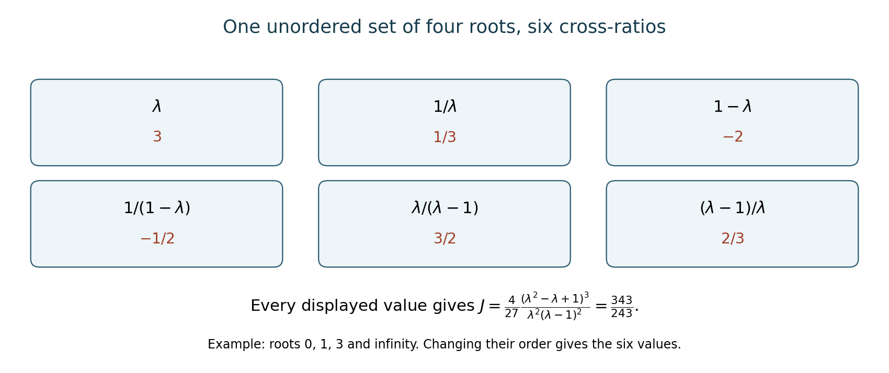

Covariants of binary and ternary forms
Written by GPT-6.1 Sol (OpenAI) in Codex at Ultra, October 2026. Original exposition and proofs are CC0. This evolving lesson is being checked by its writing AI; no independent review is recorded.
A form is a polynomial together with a choice of coordinates. An invariant detects a feature that survives changing those coordinates; a covariant produces another form that changes in a compatible way. Computing a Hessian already illustrates the distinction. We will begin with the action and its signs, obtain a differential test for covariance, and then use a single equivariant differential operator to build examples.
Throughout this lesson \(k\) has characteristic zero. We use polynomial rings, differentiation and elementary matrix operations from the algebra prerequisites. The later lesson Forms in several variables and Hilbert finiteness supplies general finite generation; Polarization and invariants of many vectors supplies the vector first fundamental theorem used by the general symbolic method. These are written lessons in this same course. The calculations here identify exactly where their conclusions enter.
1. Coordinates, substitution and determinant weight
Write a binary form of degree \(d\) as \[ f(x,y)=\sum_{i=0}^d\binom di a_i x^{d-i}y^i. \] The binomial factors are convenient over a characteristic-zero field. They require separate treatment over the integers in the final lesson.
For \(g\in\operatorname{GL}_2(k)\), fix the left action \[ (g\cdot f)(v)=f(g^{-1}v),\qquad v=(x,y)^{\mathsf t}. \] A polynomial \(C(a,x,y)\), homogeneous of coefficient degree \(\delta\) and variable order \(\omega\), is a covariant of weight \(w\) if \[ C(g\cdot f,gv)=\det(g)^{-w}C(f,v). \tag{1} \] An invariant is a covariant of order zero. The inverse determinant in (1) is part of our convention: it makes classical weights positive for the inverse-substitution action. For the special linear group the determinant factor disappears.
For \(n\) variables, use the same definition with \(g\in\operatorname{GL}_n\). A form of degree \(d\) is \(\sum_{|\alpha|=d}(d!/\alpha!)a_\alpha x^\alpha\). Systems of forms can be graded separately in the coefficients of each member. A contravariant has auxiliary variables transforming in the dual representation; it must not be silently treated as a covariant with the same variable action.
Proposition 1.1 (degree, order and weight). A nonzero bihomogeneous binary special-linear covariant extends to (1), with \[ w=\frac{d\delta-\omega}{2}\in\mathbb Z_{\geq0}. \]
Proof. The scalar matrix \(\lambda I\) multiplies the coefficients by \(\lambda^{-d}\) and the variables by \(\lambda\). Hence the left side of (1) scales by \(\lambda^{-d\delta+\omega}\). A determinant weight must therefore satisfy \(2w=d\delta-\omega\).
To prove integrality and nonnegativity without assuming them, use \(\operatorname{diag}(t,t^{-1})\in\operatorname{SL}_2\). Its coefficient action is \(a_i\mapsto t^{2i-d}a_i\). Let \(c(a)\) be the coefficient of \(x^\omega\) in \(C\). It is nonzero: if \(C(a,1,0)\) vanished for every coefficient vector, transitivity of \(\operatorname{SL}_2\) on nonzero vectors, together with covariance, would make \(C\) vanish everywhere. Since \(k\) is infinite, that would make the polynomial zero.
Every coefficient monomial in \(c\) has torus weight \(-\omega\). Its weight is a sum of \(\delta\) integers \(2i-d\), so lies between \(-d\delta\) and \(d\delta\), and is congruent to \(d\delta\) modulo two. Thus \(\omega\leq d\delta\) and \(d\delta-\omega\) is even.
Over an algebraic closure choose \(\lambda\) with \(\lambda^2=\det g\) and write \(g=\lambda s\), \(s\in\operatorname{SL}_2\). Scalar scaling and special-linear covariance now give (1). The resulting equality of polynomials descends to \(k\). \(\square\)
For a multidegree \((\delta_j)\) in forms of degrees \(d_j\), the same scalar calculation gives \(nw=\sum_jd_j\delta_j-\omega\) in \(n\) variables whenever a determinant-weight covariant exists.
2. A differential test for covariance
Let \(E_0=\left(\begin{smallmatrix}0&1\\0&0\end{smallmatrix}\right)\) and \(F_0=\left(\begin{smallmatrix}0&0\\1&0\end{smallmatrix}\right)\). The simultaneous action on coefficients and variables induces \[ E=y\frac{\partial}{\partial x} -\sum_{i=1}^d i a_{i-1}\frac{\partial}{\partial a_i}, \qquad F=x\frac{\partial}{\partial y} -\sum_{i=0}^{d-1}(d-i)a_{i+1}\frac{\partial}{\partial a_i}. \tag{2} \] For a system, sum the coefficient parts over all its forms. The variable parts appear only once.
To check the first formula, substitute \(x-ty\) into \(f\). The coefficient derivative is \[ -(d-i+1)\frac{\binom d{i-1}}{\binom di}a_{i-1}=-i a_{i-1}. \] Meanwhile the simultaneous variable action is \(x\mapsto x+ty\). The second formula follows by exchanging \(x,y\) and reversing the coefficient indices. This derivation fixes the signs; a criterion written for another action convention can have different signs.
Theorem 2.1 (infinitesimal criterion). A polynomial \(C(a,x,y)\) is special-linear invariant under the simultaneous action if and only if \(EC=FC=0\).
Proof. Invariance under the upper and lower unipotent one-parameter subgroups implies these two derivative conditions at \(t=0\).
Conversely, the action of each subgroup on a polynomial is a polynomial in \(t\). Its derivative is the translate of \(EC\), or of \(FC\), by the chain rule and the subgroup law. If the corresponding derivation kills \(C\), that derivative vanishes identically. In characteristic zero a polynomial with zero derivative is constant. Its value at \(t=0\) is \(C\), so \(C\) is invariant under both subgroups.
They generate \(\operatorname{SL}_2(k)\). Gaussian row operations reduce any determinant-one matrix to a diagonal matrix, using these elementary matrices. If \[ U(t)=\begin{pmatrix}1&t\\0&1\end{pmatrix}, \quad L(t)=\begin{pmatrix}1&0\\t&1\end{pmatrix}, \] then \(W(t)=U(t)L(-t^{-1})U(t)=\left(\begin{smallmatrix}0&t\\-t^{-1}&0\end{smallmatrix}\right)\) for \(t\ne0\), and \(W(t)W(1)^{-1}=\operatorname{diag}(t,t^{-1})\). This includes the diagonal matrices in the generated group, proving the criterion. \(\square\)
The proof uses unipotent subgroups and polynomial differentiation, rather than an unstated assertion about connected Lie groups. It works over every characteristic-zero field.
3. Transvectants: contracting two variable pairs
Use independent binary pairs \(v=(x,y)\) and \(u=(X,Y)\). Define \[ \Omega_{v,u}=\partial_x\partial_Y-\partial_y\partial_X. \] For forms \(P,Q\) of orders \(m,n\), fix the normalized transvectant \[ (P,Q)_r= \frac{(m-r)!(n-r)!}{m!\,n!} \left.\Omega_{v,u}^{\,r}\bigl(P(v)Q(u)\bigr)\right|_{u=v}, \qquad 0\leq r\leq\min(m,n). \tag{3} \] All constants in later computations refer to (3); rescaled classical invariants will be identified explicitly.
Expanding the operator gives the usable formula \[ (P,Q)_r=\frac{(m-r)!(n-r)!}{m!\,n!} \sum_{j=0}^r(-1)^j\binom rj \frac{\partial^rP}{\partial x^{r-j}\partial y^j} \frac{\partial^rQ}{\partial x^j\partial y^{r-j}}. \tag{4} \]
Theorem 3.1 (covariance of transvection). If \(P,Q\) are covariants of coefficient degrees \(\delta_1,\delta_2\), orders \(m,n\) and weights \(w_1,w_2\), then \((P,Q)_r\) is a covariant of degree \(\delta_1+\delta_2\), order \(m+n-2r\), and weight \(w_1+w_2+r\), unless it is zero.
Proof. The chain rule shows that contracting two derivatives by their alternating determinant picks up a factor \(\det g\) when both variable pairs are replaced by \(gv,gu\): \[ \Omega_{v,u}\bigl(P(gv)Q(gu)\bigr) =\det(g)\,(\Omega_{v,u}(P(v)Q(u)))\big|_{v\mapsto gv,\ u\mapsto gu}. \] This identity is checked by multiplying the two Jacobian matrices; their alternating product is the determinant. The derivatives commute, so iteration gives \(\det(g)^r\). Apply it to the covariance identity for the product of \(P,Q\), then divide by that factor. The diagonal restriction \(u=v\) commutes with simultaneous substitution. This gives determinant exponent \(-(w_1+w_2+r)\). Differentiation removes \(r\) variables from each factor, and coefficient multiplication adds the degrees. The scalar normalization changes none of these assertions. \(\square\)
Exchanging the factors reverses the alternating contraction: \[ (Q,P)_r=(-1)^r(P,Q)_r. \] Thus every odd self-transvectant vanishes. In particular, computing a nonzero \((f,f)_1\) would expose a sign or implementation error.
4. Reading a covariant from its leading coefficient
The computations to follow will give complete systems: every polynomial covariant is a polynomial in the displayed ones. To prove this, we first turn covariance into a problem about a derivation on the coefficient ring.
For a covariant \(C\) of order \(\omega\), write \[ C=c_0x^\omega+c_1x^{\omega-1}y+\cdots+c_\omega y^\omega. \] The coefficient of \(x^\omega\) in \(EC=0\) is \[ \mathcal D c_0=0,\qquad \mathcal D=\sum_{i=1}^d i a_{i-1}\partial_{a_i}. \tag{5} \] The leading-coefficient map \(C\mapsto C(a,1,0)\) is injective on the algebra of special-linear covariants, including sums of different orders. Indeed, if that evaluation is zero, covariance and the transitivity of \(\operatorname{SL}_2(k)\) on nonzero vectors make \(C(a,v)=0\) for every \(v\ne0\) and every coefficient vector. A polynomial vanishing there is zero because \(k\) is infinite.
For degrees two, three and four, abbreviate the coefficients by \(a,b,c,d,e\), omitting those not present. Set \[ h=ac-b^2,\qquad t=a^2d-3abc+2b^3. \] Direct differentiation gives \(\mathcal Da=\mathcal Dh=\mathcal Dt=0\). For a cubic also put \[ D=a^2d^2-6abcd+4ac^3+4b^3d-3b^2c^2; \] for a quartic put \[ i=ae-4bd+3c^2,\qquad j=ace+2bcd-ad^2-b^2e-c^3. \] These too are killed by \(\mathcal D\).
Theorem 4.1 (three coefficient kernels). In characteristic zero, \[ \begin{aligned} \ker(\mathcal D:k[a,b,c]\to k[a,b,c])&=k[a,h],\\ \ker(\mathcal D:k[a,b,c,d]\to k[a,b,c,d]) &\cong k[a,h,t,D]/(a^2D-t^2-4h^3),\\ \ker(\mathcal D:k[a,b,c,d,e]\to k[a,b,c,d,e]) &\cong k[a,h,t,i,j]/(t^2+4h^3-ia^2h+ja^3). \end{aligned} \tag{6} \] The isomorphisms send the formal generators to the polynomials just defined.
Proof. Invert \(a\), and use \(s=b/a\). Then \(\mathcal Ds=1\). The inverse coordinate substitutions are \[ b=as,\quad c=h/a+as^2,\quad d=t/a^2+3hs/a+as^3, \tag{7} \] and, in degree four, \[ e=i/a+4st/a^2+6hs^2/a+as^4-3h^2/a^3. \tag{8} \] Use only the available equations in each degree. These substitutions show that the localized polynomial rings have coordinates \[ (a^{\pm1},h,s),\quad (a^{\pm1},h,t,s),\quad (a^{\pm1},h,t,i,s), \] respectively. In these coordinates \(\mathcal D=\partial_s\). Its kernel consists of the polynomials independent of \(s\); this uses characteristic zero.
Expanding the definitions gives \[ a^2D=t^2+4h^3,\qquad t^2+4h^3-ia^2h+ja^3=0. \tag{9} \] Here is also a way to verify the second expansion with fewer terms: substitute (7)–(8) into the definition of \(j\); it becomes \(j=(ia^2h-t^2-4h^3)/a^3\). An equality after inverting \(a\) is an equality in the original polynomial ring.
Let \(S\) denote the corresponding proposed ring on the right of (6). Each of the two relations is primitive and linear in its last generator, \(D\) or \(j\). Its leading coefficient, \(a^2\) or \(a^3\), has no common factor with its constant coefficient, since the latter remains a nonzero polynomial modulo \(a\). Gauss's lemma makes the relation irreducible in the polynomial ring, so \(S\) is a domain. Gauss's lemma is proved in the algebra lesson Integral extensions, lying over, going up and going down, Proposition 2.3. After inverting \(a\), equations (7)–(9) identify \(S[a^{-1}]\) with the localized kernel. Because \(S\) is a domain, this also proves that \(S\) embeds in the original coefficient ring \(R\).
We must check that no denominator in \(a\) creates a new polynomial invariant. The necessary check is the injectivity of \(S/(a)\to R/(a)\).
For the quadratic it is \(k[h]\to k[b,c]\), \(h\mapsto-b^2\), which is injective. For the cubic, \[ S/(a)=k[h,t,D]/(t^2+4h^3), \quad h\mapsto-b^2,\quad t\mapsto2b^3, \quad D\mapsto4b^3d-3b^2c^2. \] Every element has a unique representative \(P(h,D)+tQ(h,D)\), by division by the monic relation in \(t\). The elements \(b,D\) are algebraically independent: over \(k(b)\), the expression for \(D\) solves for \(d\), with \(c\) still free. After substitution, the first summand uses even powers of \(b\), the second odd powers. Their sum is zero only if both polynomials are zero. Thus this map is injective.
For the quartic the same normal form is \(P(h,i,j)+tQ(h,i,j)\), with \[ h=-b^2,\quad t=2b^3,\quad i=-4bd+3c^2,\quad j=2bcd-b^2e-c^3 \] modulo \(a\). Now \(b,i,j\) are algebraically independent. Over \(k(b)\), the equation for \(i\) solves for \(d\), and the equation for \(j\) solves for \(e\), while \(c\) remains free. The even/odd argument in \(b\) again proves injectivity.
Consequently, if \(u\in S\) is divisible by \(a\) in \(R\), its class in \(S/(a)\) is zero, so \(u\in aS\). If \(u/a^N\in S[a^{-1}]\) belongs to \(R\), repeat this observation \(N\) times to obtain \(u/a^N\in S\). Thus \(S[a^{-1}]\cap R=S\). Every element of \(\ker\mathcal D\) lies in that intersection, proving (6). \(\square\)
The last part of the proof is often called saturation: divisibility seen in the larger ring was already divisibility in the proposed kernel. It is what upgrades a computation on the open set \(a\ne0\) to a global presentation.
5. Quadratics and cubics
The quadratic
Let \(f=ax^2+2bxy+cy^2\). Its basic invariant is \(h=ac-b^2\). The complete covariant algebra is \[ k[f,h]. \tag{10} \] To see generation, take a covariant of coefficient degree \(\delta\) and order \(\omega\). Its leading coefficient belongs to \(k[a,h]\) by Theorem 4.1. Select the component of that expression having coefficient degree \(\delta\) and torus weight \(-\omega\). The weights of \(a,h\) are \(-2,0\); their coefficient degrees are \(1,2\). Replacing \(a\) by \(f\) and \(h\) by \(h\) therefore gives a covariant of the same degree and order with the same leading coefficient. Injectivity proves equality. Algebraic independence of \(a,h\) proves that (10) has no relation.
The matrix of the quadratic is \[ Q=\begin{pmatrix}a&b\\b&c\end{pmatrix}. \] Inverse substitution sends \(Q\) to \(g^{-\mathsf t}Qg^{-1}\); its determinant \(h\) scales by \(\det(g)^{-2}\), as required by weight two. If \(f=(u_1x+v_1y)(u_2x+v_2y)\), coefficient comparison gives \[ h=-\tfrac14(u_1v_2-v_1u_2)^2. \tag{11} \] Thus \(h=0\) is exactly the repeated-root locus over an algebraic closure. For the usual univariate coefficients the discriminant is \(-4h\).
The cubic
Write \[ f=ax^3+3bx^2y+3cxy^2+dy^3,\quad H=(f,f)_2,\quad T=(f,H)_1,\quad \Delta=(H,H)_2. \] Formula (4) gives \[ H=2\bigl((ac-b^2)x^2+(ad-bc)xy+(bd-c^2)y^2\bigr), \qquad \Delta=-2D. \tag{12} \] The leading coefficients of \(f,H/2,T,\Delta\) are \(a,h,t,-2D\). Their orders are \(3,2,3,0\), and their coefficient degrees are \(1,2,3,4\).
Theorem 5.1 (the cubic system). The covariant algebra is generated by \(f,H,T,\Delta\), with exactly one relation: \[ 2T^2+H^3+\Delta f^2=0. \tag{13} \]
Proof. The left side is a covariant, and its leading coefficient is \(2t^2+8h^3-2Da^2=0\) by (9). Leading-coefficient injectivity proves (13), including every coefficient of the forms.
For generation, Theorem 4.1 expresses the leading coefficient of any covariant in \(a,h,t,D\). The torus weights are minus the orders just listed. As in the quadratic case, select its coefficient-degree and torus-weight component, then replace these four generators by \(f,H/2,T,-\Delta/2\). Every monomial has the desired order and degree, so injectivity identifies the resulting covariant with the original one. Finally, the kernel presentation in (6) proves that every relation is a multiple of (13), after the indicated rescaling. \(\square\)
For \(f=x^3+y^3\), the normalization gives \[ H=2xy,\quad T=x^3-y^3,\quad \Delta=-2. \] Relation (13) becomes \(2(x^3-y^3)^2+8x^3y^3-2(x^3+y^3)^2=0\). For \(f=x^2y\), remembering that \(b=1/3\), it gives \[ H=-\tfrac29x^2,\quad T=\tfrac2{27}x^3,\quad\Delta=0. \]
If \(f=\ell_1\ell_2\ell_3\), with \(\ell_r=u_rx+v_ry\) and \([rs]=u_rv_s-v_ru_s\), then \[ \Delta=\tfrac2{27}[12]^2[13]^2[23]^2. \tag{14} \] Here is a proof that fixes both the root meaning and the constant. For distinct root lines, a projective linear transformation sends their ordered triple to the root lines of \(xy(x-y)\). This follows by sending the first two lines to the coordinate axes, then using a diagonal matrix to send the third to \(x-y\). On replacing \(\ell_r\) by \(\lambda_r\ell_r\), both sides of (14) scale by \((\lambda_1\lambda_2\lambda_3)^4\); under inverse substitution both have determinant weight six. It is therefore enough to check \(xy(x-y)\). Its coefficients are \(a=d=0,b=1/3,c=-1/3\), so \(D=-1/27\) and \(\Delta=2/27\); the bracket product squared is one. This proves (14) on the dense open set of triples with distinct root lines, and therefore as a polynomial identity everywhere. The ordinary discriminant is \((27/2)\Delta\). In particular, its vanishing means precisely that the cubic has a repeated root.
6. Quartics and the cross-ratio of four roots
Write \[ f=ax^4+4bx^3y+6cx^2y^2+4dxy^3+ey^4,\quad H=(f,f)_2,\quad T=(f,H)_1. \] Use the explicitly rescaled invariants \[ i=\tfrac12(f,f)_4=ae-4bd+3c^2,\qquad j=\tfrac16(f,H)_4=ace+2bcd-ad^2-b^2e-c^3. \tag{15} \] The factors \(1/2\) and \(1/6\) matter: applying (3) without them would give \(2i,6j\), and would change the usual discriminant formula.
The Hessian in this normalization is \[ \begin{split} H=2\bigl(& (ac-b^2)x^4+2(ad-bc)x^3y\\ &+(ae+2bd-3c^2)x^2y^2 +2(be-cd)xy^3+(ce-d^2)y^4\bigr). \end{split} \tag{16} \] Its leading coefficient is \(2h\), and that of \(T\) is \(t\).
Theorem 6.1 (the quartic system). The covariant algebra has generators \(f,H,T,i,j\) and exactly one relation: \[ 2T^2+H^3-if^2H+2jf^3=0. \tag{17} \]
Proof. Its leading coefficient is twice the quartic relation in (9). All terms are covariants of coefficient degree six and order twelve, so leading-coefficient injectivity proves the identity. For generation and the absence of further relations, use the quartic kernel in Theorem 4.1. Its generators have coefficient degrees \(1,2,3,2,3\) and torus weights \(-4,-4,-6,0,0\). Select the required degree and weight component, and lift by \(a,h,t,i,j\mapsto f,H/2,T,i,j\). This repeats the already proved argument for the cubic. \(\square\)
In particular the quartic invariant ring is \(k[i,j]\): a covariant of order zero can only use the generators of order zero. The kernel proof also shows that \(i,j\) are algebraically independent.
The ordinary discriminant is \[ \operatorname{disc}(f)=256(i^3-27j^2). \tag{18} \] To prove this, factor \(f=\prod_{r=1}^4\ell_r\). The root discriminant \(\prod_{r<s}[rs]^2\) has coefficient degree six and determinant weight twelve. On the open set of four distinct root lines, projective substitution and rescaling of the factors reduce the calculation to \[ f_\lambda=xy(x-y)(x-\lambda y),\qquad \lambda\ne0,1. \] Formula (15) gives \[ i=\frac{\lambda^2-\lambda+1}{12},\qquad j=\frac{(\lambda+1)(2\lambda^2-5\lambda+2)}{432}. \] Substitution yields \(256(i^3-27j^2)=\lambda^2(1-\lambda)^2\), which is also its bracket product squared. Both sides transform with the same weight and degree, so they agree on that open set, and polynomial density proves (18) for every quartic. Consequently the discriminant vanishes exactly on the repeated-root locus.
For a quartic with four distinct roots, define the absolute invariant \[ J(f)=\frac{i^3}{i^3-27j^2}. \] It is unchanged by \(\operatorname{GL}_2\) and by multiplying the form by a nonzero scalar. For the displayed normal form, \[ J(\lambda)=\frac4{27} \frac{(\lambda^2-\lambda+1)^3}{\lambda^2(\lambda-1)^2}. \tag{19} \] This equals the conventional elliptic \(j\)-invariant divided by \(1728\). To check the normalization, the double cover of the root line is \(y^2=x(x-1)(x-\lambda)\). Put \(x=X+(\lambda+1)/3\), \(Y=2y\). Expansion gives \[ Y^2=4X^3-g_2X-g_3,\qquad g_2=\frac43(\lambda^2-\lambda+1),\quad g_3=\frac4{27}(\lambda+1)(2\lambda^2-5\lambda+2). \] Here \(g_2^3-27g_3^2=16\lambda^2(\lambda-1)^2\). The conventional definition \(j_{\rm ell}=1728g_2^3/(g_2^3-27g_3^2)\) therefore gives exactly \(1728J(\lambda)\).
Proposition 6.2 (separation of the four-root configurations). Over an algebraic closure, two quartics with nonzero discriminant have the same \(J\) if and only if their unordered root sets are projectively equivalent. Equivalently, they differ by a linear change of variables and a nonzero scalar.
Proof. The six possible values of the cross-ratio of an unordered four-point configuration are \[ \lambda,\quad1-\lambda,\quad1/\lambda,\quad 1/(1-\lambda),\quad\lambda/(\lambda-1),\quad(\lambda-1)/\lambda. \tag{20} \] For example, interchanging two entries in an ordered cross-ratio yields \(1-\lambda\) or \(1/\lambda\); these two operations generate the list. The other permutations leave one of these six values. Conversely, choosing three of the points as \(0,1,\infty\) gives precisely these possibilities for the fourth, by the unique projective transformation taking one ordered triple to another.
Formula (19) is unchanged by the two generating transformations, by direct substitution. For a proof of the converse that includes exceptional configurations with extra symmetries, use a variable \(z\). Clearing denominators in \(J(z)=J(\lambda)\) gives the degree-six polynomial \[ P_\lambda(z)= \lambda^2(\lambda-1)^2(z^2-z+1)^3 -(\lambda^2-\lambda+1)^3z^2(z-1)^2. \] For a generic \(\lambda\) its six distinct roots are the entries of (20), and its leading coefficient is \(\lambda^2(\lambda-1)^2\). Hence \[ P_\lambda(z)=\lambda^2(\lambda-1)^2 \prod_{\rho\text{ in }(20)}(z-\rho) \tag{21} \] as an identity in \(k(\lambda)[z]\). The generic argument proves equality of rational functions, so it specializes for every \(\lambda\ne0,1\). The repetitions in the product then give the correct multiplicities at special values. Thus equality of \(J\) forces the other cross-ratio to be in (20). The description of ordered triples proves projective equivalence. The reverse implication was invariance. \(\square\)
Over a field that is not algebraically closed, \(J\) separates geometric orbits; it does not assert that the required transformation has coefficients in that field. This distinction already occurs for quadratics.
For \(x^4+y^4\) one has \(i=1,j=0\), so \(J=1\); it is a harmonic configuration. For \(x^3y\), \(b=1/4\) and the other coefficients vanish, giving \(i=j=0\) and zero discriminant. For distinct roots, \(j=0\) describes the harmonic configurations: in the normal form it means \(\lambda\in\{-1,2,1/2\}\). Likewise \(i=0\) means \(\lambda^2-\lambda+1=0\), the equianharmonic configurations. Formula (21) accounts for the smaller numbers of distinct cross-ratios in both cases.

The six displayed values form one orbit under (20), and (19) has the same value at each. This illustrates Proposition 6.2 at a configuration without extra symmetry; the polynomial identity (21) also covers the exceptional harmonic and equianharmonic orbits. Editable diagram.
7. Symbols that stand for coefficients
The expression \(f=a_x^d\) in classical invariant theory is symbolic. It does not assert that a general form is a power of a linear form. Introduce a row of independent symbol variables \(a=(a_1,\ldots,a_n)\), and write \(a_x=\sum a_rx_r\). The linear umbral evaluation for this letter sends \[ a^\alpha\longmapsto A_\alpha\quad (|\alpha|=d), \] where \(f=\sum_{|\alpha|=d}(d!/\alpha!)A_\alpha x^\alpha\). Then \(U(a_x^d)=f\).
For several distinct letters of degree \(d\), apply this rule to each letter and multiply their images. Thus, for binary forms, \[ U(a_1^{d-r}a_2^r b_1^{d-s}b_2^s)=A_rA_s. \tag{22} \] For a system of forms, assign each letter to one of the forms and use that form's degree and coefficients. The map is defined on the subspace having exactly the assigned degree in each letter. It is linear, and it respects products that use disjoint sets of letters. It is generally not multiplicative on arbitrary symbolic polynomials involving the same letter.
Use the determinants \[ [ab]=a_1b_2-a_2b_1,\qquad [abc]=\det\begin{pmatrix}a_1&a_2&a_3\\b_1&b_2&b_3\\c_1&c_2&c_3\end{pmatrix} \] in dimensions two and three, respectively. The \(n\)-dimensional bracket has \(n\) covector rows.
Theorem 7.1 (equivariant evaluation). Umbral evaluation intertwines changes of coordinates. A product of brackets and factors \(a_x\), having the assigned degree in each letter, evaluates to a covariant. Its determinant weight is the number of brackets, counted with multiplicity.
Proof. A change \(g\) acts on every letter by \(a\mapsto ag^{-1}\). For one letter the identity \[ U_f((ag^{-1}x)^d)=f(g^{-1}x) \] follows by expanding the power. Comparing the coefficients of \(x^\alpha\) proves the intertwining identity on the basis of degree-\(d\) symbol monomials. Tensoring these identities proves it for several letters, because their evaluations multiply. Each bracket scales by \(\det(g)^{-1}\), while \((ag^{-1})\cdot(gx)=a_x\). Apply the intertwining identity to the bracket product. This gives (1) with the stated weight. \(\square\)
In particular the normalized Hessian has the symbolic expression \[ (f,f)_2=U\bigl([ab]^2a_x^{d-2}b_x^{d-2}\bigr). \tag{23} \] For a direct proof, apply \(\Omega^2\) to \(a_x^db_X^d\). It gives \(d^2(d-1)^2[ab]^2a_x^{d-2}b_X^{d-2}\); the factorial factor in (3) cancels that coefficient. Evaluation and differentiation commute, and then \(X=x\) gives (23).
Symbolic descriptions are not unique. For four binary letters, expansion of the \(2\times2\) determinants gives \[ [ab][cd]-[ac][bd]+[ad][bc]=0. \tag{24} \] For example, the coefficient of \(a_1b_2c_1d_2\) in the first two terms is \(1-1\), and the same cancellation, after permuting the letters and indices, cancels every monomial.
The converse to Theorem 7.1 is also useful: every polynomial covariant is a linear combination of these evaluations. Its precise input is the first fundamental theorem for vectors and dual vectors, proved in the later lesson Polarization and invariants of many vectors, in the section Vectors and dual vectors. To see how the input applies, polarize a degree-\(\delta\) polynomial in the coefficients into \(\delta\) separate coefficient slots. In each slot replace a degree-\(d\) form by \(a_x^d\), using a new letter. Powers span the space of forms: expanding \((t_1x_1+\cdots+t_nx_n)^d\) and comparing the coefficients of the \(t_r\) proves this, since the multinomial coefficients are nonzero. The polarized covariant therefore becomes an invariant polynomial in covector letters and the vector \(x\). The mixed first fundamental theorem writes that polynomial in covector determinants and pairings \(a_x\); a determinant of vector slots is zero when all those slots are the single repeated vector \(x\). Keep the specified multidegree in the letters, then evaluate and restitute the coefficient slots. This recovers the original covariant. In dimension two, the same conclusion follows directly from the vector theorem by identifying \(x\) with the covector \((-y,x)\).
The determinant identity (24) is proved here. The full statement that the Plücker relations generate the relation ideal belongs to the straightening argument in Polarization and invariants of many vectors, and to its integral version in the final lesson.
8. Finite generation and a finite set of integer solutions
Lemma 8.1 (Dickson). Every subset of \(\mathbb N^m\), ordered componentwise, has finitely many minimal elements. More strongly, every infinite sequence in \(\mathbb N^m\) contains indices \(r<s\) with \(v_r\leq v_s\).
Proof. A sequence of nonnegative integers has an infinite nondecreasing subsequence. If some value occurs infinitely often, take that constant subsequence. Otherwise every bounded set of values occurs at only finitely many indices, so choose successively larger values at larger indices. For the assertion in \(\mathbb N^m\), argue by induction on \(m\). Take an infinite subsequence nondecreasing in the last coordinate, and apply induction to the first \(m-1\) coordinates. The resulting pair is comparable in every coordinate. An infinite set of distinct minimal elements would give an infinite sequence without such a pair. \(\square\)
Theorem 8.2 (Gordan's lemma). For an integer matrix \(A\), the additive monoid \[ M=\{v\in\mathbb N^m:Av=0\} \] is generated by its finitely many minimal nonzero elements.
Proof. They form an antichain, so Lemma 8.1 makes them finite. For \(v\in M\setminus\{0\}\), the finite box \(\{u:0\leq u\leq v\}\) contains a minimal nonzero solution \(b\). It is minimal in all of \(M\), since any smaller solution would still belong to the box. Linearity gives \(A(v-b)=0\), and \(v-b\) is nonnegative. Repeating subtraction strictly decreases the sum of the coordinates and therefore terminates at zero. The subtracted elements express \(v\) as the required sum. \(\square\)
This lemma controls exponent patterns in symbolic constructions. It does not by itself prove finiteness when the number of symbolic letters is allowed to grow; that additional reduction must be supplied.
Theorem 8.3 (Gordan's finiteness theorem). The covariant algebra of a finite system of binary forms over a characteristic-zero field is finitely generated.
Proof. Over \(\mathbb C\), apply the finite-generation theorem in the next lesson, Hilbert finiteness for the special linear group, to the polynomial ring in all coefficient variables and \(x,y\). The special linear group acts linearly on this finite-dimensional space of variables. Its invariant ring is exactly the covariant algebra. This is the stated theorem of that lesson, including the extra variable representation, rather than a claim that coefficient invariants alone suffice.
To pass to any characteristic-zero field, first work over \(\mathbb Q\). In each total degree the covariant subspace is the simultaneous kernel of the two rational matrices for \(E,F\) in (2). Extension of scalars commutes with that kernel, since it is the solution space of finitely many linear equations. Finite generation over \(\mathbb C\) gives a bound \(N\) on the total degrees of a set of generators. Choose a rational basis of the covariant spaces through degree \(N\), and let \(B_0\) be the algebra they generate. In every degree, the quotient of the rational covariant space by the corresponding component of \(B_0\) becomes zero after tensoring with \(\mathbb C\); hence it was zero. Thus \(B_0\) is the rational covariant algebra. Tensoring with \(k\), and applying the same kernel argument in each degree, proves the theorem over \(k\). \(\square\)
This proof uses the complete Reynolds-and-Hilbert argument supplied in the next lesson. Gordan's original proof instead reduces iterated transvectants and uses finiteness of their admissible exponent patterns. Kung and Rota's The invariant theory of binary forms, Section 6, gives two constructive symbolic proofs; their Section 6.4, Proposition 6.3 and Lemma 6.6, treats the integer-solution lemma. The kernel argument in Sections 4–6 above supplies an independent completeness proof for the small forms.
9. Ternary forms and the scope of Noether's computation
For a ternary form, symbolic letters have three coordinates, and brackets are \([abc]\). A bracket consumes one degree from each of three letters. For a quartic letter every symbolic expression must still use exactly four degrees of that letter before evaluation. The first lesson's scalar calculation becomes \[ 3w=4\delta-\omega \] for a ternary quartic covariant of coefficient degree \(\delta\) and vector-variable order \(\omega\). A concomitant with dual-variable order \(\nu\) instead has \(3w=4\delta-\omega+\nu\), since the dual variables scale inversely. These formulas refer to our inverse-substitution convention.
For example, the ternary Hessian \(\det(f_{x_ix_j})\) has coefficient degree three and order six, so weight two. The chain rule gives its covariance directly: the Hessian matrix after inverse substitution is \(g^{-\mathsf t}\operatorname{Hess}(f)(g^{-1}x)g^{-1}\); taking its determinant gives the factor \(\det(g)^{-2}\). The cubic-degree quartic invariant \[ U([abc]^4) \] uses degree four in each of three letters and has weight four. Its nonvanishing can be checked on \(x^4+y^4+z^4\): each letter must use a single coordinate to degree four, so the six determinant-permutation terms survive, each with positive sign, giving value six.
A ternary quadratic
For a quadratic \(f=x^{\mathsf t}Qx\) with symmetric \(3\times3\) matrix \(Q\), \(\det Q\) is an invariant of coefficient degree three and weight two. It generates the invariant ring.
Proof. Over an algebraic closure, diagonalize a nondegenerate symmetric form by congruence: completing a square splits off a nonzero diagonal entry, and induction diagonalizes its orthogonal complement. A nonzero diagonal entry can be arranged whenever the form is nonzero, because the associated bilinear form is recovered from quadratic values by polarization and \(2\ne0\). Taking square roots of the nonzero diagonal entries shows that two nondegenerate forms are general-linearly congruent. If their determinants agree, a congruence between them has determinant \(1\) or \(-1\). In the latter case compose it with a reflection isometry of one diagonalized form, which has determinant \(-1\); the congruence is then special-linear.
For an invariant polynomial \(F(Q)\), put \(h(t)=F(\operatorname{diag}(t,1,1))\). This is a polynomial. The orbit assertion gives \(F(Q)=h(\det Q)\) on the dense nondegenerate locus, so the equality is global. Descent to \(k\) follows by evaluating \(h\) on that same diagonal slice; its coefficients belong to \(k\). Thus the invariant ring is \(k[\det Q]\). \(\square\)
Relative completeness in the ternary quartic
Noether's 1907 note and 1908 dissertation study a system containing covariants, contravariants and mixed forms of a general ternary quartic. The original term “biquadratic” here means degree four. Her count is 331 forms and subsystems, complete relative to two quadratic forms. It is not the size of an absolutely complete covariant system, and it is not a list of 331 generators of the scalar invariant ring.
The distinction is explicit in the 1908 introduction, printed page 25: the relatively complete system is formed modulo the pair \((\rho,t)\), and transvection with the system of that pair to obtain an absolutely complete system is left for further work. The closing summary on printed page 89 again states relative completeness for 331 forms and subsystems. The 1907 note describes the same termination at a pair of quadratic forms.
A relative system supplies reduction expressions with additional moduli still present. Completing the calculation requires the simultaneous system of those moduli and the relevant foldings with the relative system. Merely counting the surviving forms before that last step cannot establish absolute completeness. The distinction is already visible in our elementary coefficient proof: computations after inverting \(a\) gave the localized kernel; the separate saturation argument was needed to obtain the full polynomial kernel.
Modern scalar invariants
The scalar invariant ring of ternary quartics has seven homogeneous parameters of degrees \[ 3,6,9,12,15,18,27, \] and thirteen algebra generators of degrees \[ 3,6,9,9,12,12,15,15,18,18,21,21,27. \] These are different assertions. A homogeneous system of parameters gives a polynomial subalgebra over which the ring is finite; it need not itself generate the algebra.
Dixmier proved the parameter assertion in On the projective invariants of quartic plane curves (1987). Ohno supplied the thirteen-generator result, and Elsenhans gave an explicit computational verification and another generator system in Explicit computations of invariants of plane quartic curves, Sections 5–6 (2015). His verification computes lower ranks by evaluations modulo a prime and compares them with the Hilbert-series dimensions through a proved degree bound. Elsenhans's primary paper
The seven-parameter theorem is proved in Section 10 below, and the full thirteen-generator theorem is proved in Section 11 with exact all-degree and finite independence certificates. The consulted primary papers supply attribution and checks of the stated results; their free availability is not an open reuse licence.
10. Seven parameters for a ternary quartic
We now prove the seven-parameter assertion, including the finite calculations on which it depends. This is Dixmier's theorem. The singular-form reduction also appears in Lercier, Liu, Lorenzo García and Ritzenthaler, Reduction type of smooth plane quartics, Theorem 4.1. The argument below uses independently written contractions, polynomial identities and a Jacobian certificate. The primary papers and their ancillary software are not included in the independent source package.
Write a quartic with ordinary, rather than multinomially normalized, coefficients: \[ F(x,y,z)=\sum_{i+j+k=4}c_{ijk}x^iy^jz^k. \] Put \(R=k[c_{ijk}]^{\operatorname{SL}_3}\). A homogeneous system of parameters here means algebraically independent homogeneous invariants \(q_1,\ldots,q_7\) such that \(R\) is a finite module over \(k[q_1,\ldots,q_7]\). Establishing independence alone would not establish this conclusion.
The contractions defining six parameters
For forms occupying dual variable spaces, write \(A\mathbin{\lrcorner}B=A(\partial)B\). For example, \[ \left(\sum a_{ijk}x^iy^jz^k\right)\mathbin{\lrcorner}B(u,v,w) =\sum a_{ijk}\partial_u^i\partial_v^j\partial_w^kB. \] This is an equivariant contraction: the chain rule cancels the transformations of the variables against those of the derivatives.
Take vectors \(r,s\), and restrict \(F\) to their plane: \[ F(rX+sY)=aX^4+bX^3Y+cX^2Y^2+dXY^3+eY^4. \] The binary quartic invariants in our earlier normalization are \[ i=ae-\frac{bd}{4}+\frac{c^2}{12},\qquad j=\frac{ace}{6}+\frac{bcd}{48}-\frac{ad^2+b^2e}{16}-\frac{c^3}{216}. \] Define the ternary contravariants \(\sigma\) and \(\psi\) by \[ \sigma(r\times s)=i(F(rX+sY)),\qquad \psi(r\times s)=j(F(rX+sY)). \tag{25} \] They have coefficient degrees two and three, and dual-variable orders four and six.
Here is why these definitions give polynomials. Two plane bases with the same nonzero cross product differ by a determinant-one binary change of basis, so their values of \(i,j\) agree. Scaling the cross product scales them to the fourth and sixth powers. On the chart \(u\ne0\), use \(r=(-v,u,0)\), \(s=(-w,0,u)\); their cross product is \(u(u,v,w)\). Thus \[ \sigma(u,v,w)=\frac{i(F(-vX-wY,uX,uY))}{u^4},\qquad \psi(u,v,w)=\frac{j(F(-vX-wY,uX,uY))}{u^6}. \tag{26} \] The corresponding constructions on \(v\ne0\) and \(w\ne0\) agree on overlaps. A denominator in the first chart could only have the irreducible factor \(u\). Regularity on the second chart excludes a pole at the generic point of \(u=0\), so this factor cancels. This proves that (26) is polynomial in the coefficients and dual variables. Homogeneity gives the stated orders. Applying \(g\in\operatorname{SL}_3\) to a plane basis sends its cross product to \(g^{-\mathsf t}(r\times s)\); hence (25) proves contravariance.
Set \[ \rho=\frac{F\mathbin{\lrcorner}\psi}{144},\qquad \tau=\frac{\rho\mathbin{\lrcorner}F}{12}. \tag{27} \] The first is a quadratic contravariant of coefficient degree four; the second is a quadratic covariant of degree five. Write \(\rho=u^{\mathsf t}Au\), \(\tau=x^{\mathsf t}Bx\), using symmetric matrices with half the mixed-term coefficient in each off-diagonal entry. Define \[ \begin{aligned} I_3&=\frac{F\mathbin{\lrcorner}\sigma}{72},& I_9&=\operatorname{tr}(BA),\\ I_{12}&=\det A,& I_{15}&=\det B,\\ I_{18}&=\operatorname{tr}(\operatorname{adj}B\operatorname{adj}A). \end{aligned} \tag{28} \] For \(I_6\), put \(a_\alpha=c_\alpha\alpha!/4!\), and index a six-by-six matrix by the degree-two monomials: \[ I_6=\det(a_{\alpha+\beta})_{|\alpha|=|\beta|=2}. \tag{29} \] This is the catalecticant determinant. In particular, its entries use normalized coefficients even though \(F\) was written with ordinary coefficients.
All six expressions are invariants. Under \(g\in\operatorname{SL}_3\), the quadratic matrices become \(A\mapsto gAg^{\mathsf t}\) and \(B\mapsto g^{-\mathsf t}Bg^{-1}\), so the traces, determinants and adjugate trace in (28) are unchanged. The catalecticant is a bilinear form on a symmetric-square space; its determinant changes by the square of \(\det(\operatorname{Sym}^2g)=\det(g)^4=1\). The identity for this last determinant follows first on diagonal matrices, where each diagonal entry occurs with total exponent four, and then on elementary matrices, whose symmetric-square matrices are unipotent. These generate the special linear group. The remaining contraction in (28) is equivariant and has order zero. Their coefficient degrees are precisely their subscripts. On \(F=x^4+y^4+z^4\), \(I_3=1\), fixing the normalization.
A degree-27 discriminant, with a determinant formula
We need both the zero set and a computable formula for the seventh parameter. We give the requisite resultant argument explicitly.
Lemma 10.1 (three cubics). There is a polynomial \(\operatorname{Res}(g_1,g_2,g_3)\), of degree nine in each cubic's coefficients, whose vanishing is equivalent to the three homogeneous cubics having a common point of \(\mathbb P^2\). Normalize it to take value one on \((x^3,y^3,z^3)\). It is a determinant quotient of the degree-seven part of the cubic Koszul complex.
Proof. Work first over \(\mathbb C\), and let \(S_d\) denote the space of ternary forms of degree \(d\). We spell out the elementary dimension facts used here. Dimension of an irreducible coefficient variety means the transcendence degree of its function field. An image parametrized by \(r\) independent coordinates has dimension at most \(r\), because its coordinate functions lie in that rational function field. A Jacobian of rank \(r\) gives the reverse bound: differentiating a polynomial relation of least degree would otherwise give a nonzero relation of smaller degree.
An irreducible closed subset of \(\mathbb A^n\) of dimension \(n-1\) has a single irreducible defining polynomial. To see this, take an irreducible factor \(q\) of a nonzero polynomial in its prime ideal. A linear coordinate change makes \(q\) monic in the last coordinate: choose that coordinate's direction where the highest homogeneous part of \(q\) is nonzero. If the prime ideal contained \(h\notin(q)\), the nonzero Sylvester resultant of \(q,h\) in the last coordinate would give a relation among the other \(n-1\) coordinates. It is nonzero by Gauss's lemma, since \(q\) is irreducible and monic; the Sylvester adjugate gives an identity expressing it as a combination of \(q,h\). The other coordinates would then have transcendence degree at most \(n-2\), and the last is algebraic over them by the monic equation \(q\). This contradicts dimension \(n-1\). Thus the prime ideal is \((q)\). These observations justify the parameter counts and hypersurface assertions below.
The incidence set \[ Z=\{(g_1,g_2,g_3,P):g_1(P)=g_2(P)=g_3(P)=0\} \] is irreducible of dimension 29. Indeed, over each point of \(\mathbb P^2\) the three evaluations impose three independent linear equations on the 30 coefficients. On a coordinate chart this is a trivial affine bundle of dimension 27 over a two-dimensional chart, and the charts have dense overlaps.
Its image in coefficient space is closed. To check this without assuming an elimination theorem, a triple outside the image has affine common zero set consisting only of the origin. The Nullstellensatz implies \((x,y,z)^N\subset(g_1,g_2,g_3)\) for some \(N\). Surjectivity of \(S_{N-3}^3\to S_N\), \((h_i)\mapsto\sum h_ig_i\), is an open matrix-rank condition. Conversely, surjectivity excludes a projective common zero. The complement of the image is the union of these open sets, and is therefore open.
The image has dimension 29. For example, \(g_1=x^3-z^3\), \(g_2=y^3-z^3\) meet in nine distinct points, and one can choose \(g_3\) to vanish at exactly one of them. At that point the first two equations have an invertible Jacobian in the two affine point coordinates. Locally they solve for the point, and the third equation imposes one independent condition on the coefficient space. Thus the image is an irreducible hypersurface. Since the coefficient ring is a unique factorization domain, it has an irreducible defining polynomial \(D\), unique up to a constant.
For a general fixed pair of cubics, there are nine distinct intersection points. Here is the degree count. Coprime cubics form a regular sequence of length two: the first is nonzero, and coprimality makes the second a nonzerodivisor modulo the first, by unique factorization. The two multiplication exact sequences give \[ \operatorname{Hilb}_{S/(g_1,g_2)}(t)=\frac{(1-t^3)^2}{(1-t)^3}. \] Its coefficients are eventually nine. For distinct transverse projective zeros the eventual coefficient equals their number. Homogeneous interpolation separates the points. Transversality identifies the localized ideal with the reduced point ideal at each of them. The difference between the complete-intersection ideal and the intersection of these point ideals is consequently supported only at the origin; the Nullstellensatz makes a power of \((x,y,z)\) annihilate this finitely generated difference, so its graded pieces eventually vanish. Transversality is an open condition, and the displayed pair exhibits it. For this general pair, \(D\), viewed as a polynomial in \(g_3\), vanishes on the nine distinct evaluation hyperplanes \(g_3(P)=0\). Each occurs with multiplicity one: at a triple having just one common point, the preceding implicit-function calculation makes that evaluation the local defining equation, with nonzero derivative in a coefficient of \(g_3\). We may choose a smooth point of the irreducible hypersurface here: in characteristic zero an irreducible polynomial cannot divide all its nonzero partial derivatives, so its smooth locus is dense. Hence \(D\) has degree nine in that group of coefficients. Symmetry gives degree nine in each group.
The promised determinant description supplies a rational formula and its coefficient field. Consider \[ S_1^3\xrightarrow{K}S_4^3\xrightarrow{M}S_7, \qquad M(h_1,h_2,h_3)=\sum h_ig_i, \tag{30} \] where the three components of \(K\) send a linear form \(\ell\), for a pair \(i<j\), to the tuple with \(g_j\ell\) in slot \(i\), \(-g_i\ell\) in slot \(j\), and zero elsewhere. Its dimensions are \(9,45,36\), and \(MK=0\). At \((x^3,y^3,z^3)\), \(M\) is surjective, because a monomial of degree seven must be divisible by one of \(x^3,y^3,z^3\). Also \(K\) is injective. Thus the generic complex is exact.
The elementary complementary-minor identity for an exact complex says \[ \det M_J=\varepsilon_J T\det K_{J^c} \tag{31} \] for every set \(J\) of 36 domain basis elements, where \(\varepsilon_J\) is the basis-shuffle sign and \(T\) is a common rational function. To prove the identity, choose a basis of the kernel of \(M\) from the columns of \(K\), complete it to a basis of the middle space, and take the top exterior power. Expanding that wedge in the original basis gives exactly the complementary minors and their shuffle signs.
In fact \(T\) is polynomial. The nine-row minors of \(K\) have no common irreducible factor. Whenever \(g_1,g_2\) are coprime, \(K\) is injective: its third-slot equation is a syzygy between \(g_1,g_2\) with linear coefficients; divisibility forces both coefficients to be zero because the cubics have degree three, and the remaining coefficient is then zero. The locus of noncoprime pairs has codimension at least two. For a common factor of degree one, two or three, its dimension in the 20-dimensional pair space is at most \[ 2+6+6=14,\quad 5+3+3=11,\quad 9+1+1=11, \] respectively: choose the common factor up to scalar and the two remaining factors. Consequently no hypersurface can divide all those minors. If the rational function \(T\) had an irreducible denominator after cancellation, (31) would force that denominator to divide every minor of \(K\), a contradiction.
Choose \(J\) as follows: for every degree-seven monomial, take the multiple of the first \(g_i\) for which its exponent in variable \(i\) is at least three. This selects 15, 12 and 9 domain elements in the three slots. In the complementary minor of \(K\), the remaining three rows in slot two involve \(g_1\), and the remaining six rows in slot three give three further \(g_1\) factors and three \(g_2\) factors. Equivalently its block form is triangular by the pairs \((1,2),(1,3),(2,3)\). Thus its multidegree is \((6,3,0)\), whereas \(\det M_J\) has multidegree \((15,12,9)\). It follows that \(T\) has multidegree \((9,9,9)\).
At a general triple with a common point, evaluation at that point annihilates the image of \(M\), so all its maximal minors vanish; \(K\) still has rank nine. Therefore \(T\) vanishes on the irreducible incidence hypersurface, and \(D\) divides \(T\). Their equal multidegrees make the quotient a nonzero constant. Normalize the sign and constant at the three pure cubes. This gives \(\operatorname{Res}\), proves the formula, and proves the zero-set assertion everywhere, including multiple intersections. The matrices and normalization are rational, so the resulting polynomial is rational. The zero-set assertion extends to every characteristic-zero field as well. The finitely generated field of the given coefficients embeds in \(\mathbb C\). For each degree, surjectivity of the multiplication matrix used above is preserved under extension of fields. The Nullstellensatz's equivalence between some such surjectivity and absence of a projective zero therefore transfers the assertion to any algebraic closure of the coefficient field. \(\square\)
Define \[ I_{27}(F)=\frac{\operatorname{Res}(F_x,F_y,F_z)}{4^{27}}. \tag{32} \] Euler's equation \(4F=xF_x+yF_y+zF_z\) shows that its zero set is exactly the singular quartics. Its degree is 27, and its value on \(x^4+y^4+z^4\) is one.
It is an invariant. Changes of variables and invertible combinations of the three cubic equations preserve the resultant hypersurface, so the irreducible polynomial in Lemma 10.1 transforms by a character. On either special linear group that character is trivial. Indeed, its restriction to an elementary one-parameter subgroup is a regular character \(\mathbb G_a\to\mathbb G_m\); the only units in \(\mathbb C[t]\) are nonzero constants, and the identity value is one. Elementary matrices generate \(\operatorname{SL}_3\). The chain rule for the three partial derivatives uses these two special linear actions, proving the assertion.
The exact elimination certificates
Some coefficients below are large, but the calculation is finite. The editable source package contains quartic_algebra.py, the construction scripts and every polynomial certificate used here. In particular, the certificates record the following rule for every contraction:
\[
(a_\alpha x^\alpha)\mathbin{\lrcorner}(b_\beta u^\beta)
=a_\alpha b_\beta\frac{\beta!}{(\beta-\alpha)!}u^{\beta-\alpha}
\quad(\beta\geq\alpha),
\tag{33}
\]
with zero contribution otherwise. Equations (26)–(29) and (33) completely specify the calculation; no source-paper software is called.
We use two elementary certificate principles. If two univariate polynomials have a common root, their Sylvester determinant is zero. Evaluation at that root gives a nonzero vector annihilated by the transpose of the Sylvester map \((a,b)\mapsto ap+bq\); this argument remains valid if a leading coefficient specializes to zero. Iterating this observation permits elimination in two stages. If several univariate polynomials vanish at the same value, their monic greatest common divisor also vanishes there: the Euclidean algorithm expresses that greatest common divisor as their polynomial linear combination.
For an ideal-membership certificate, the data consist simply of polynomials \(h_i\) and the checked equality \(q=\sum h_ip_i\). This forces \(q=0\) at every common zero of the input polynomials. The stored branch identities use rational coefficients and are verified by exact multiplication. They do not require an assumption that numerical sample points exhaust a variety.
Lemma 10.2 (the distinct-tangent calculation). For \[ F=xyz^2+(x^3+y^3)z+Ay^4+Bxy^3-\frac92x^2y^2+Dx^3y+Ex^4, \tag{34} \] the equations \(I_6=I_9=I_{12}=I_{15}=I_{18}=0\) imply either \[ A=E=-\frac32,\quad B=D=-\frac{15}{4}, \tag{35} \] or \[ 4A^2-6A+9=0,\quad E=\frac32-A,\quad B=\frac{15}{4}-\frac52A,\quad D=\frac52A. \tag{36} \]
Proof. Equation (29) gives \(I_6=(4AE-9)/82944\), so \(A\ne0\) and \(E=9/(4A)\). Substitute this value into the four expressions of degrees 9, 12, 15 and 18. Clear the denominators, obtaining \(p_0,p_1,p_2,p_3\in\mathbb Q[D,B,A]\), in this order. The coefficient lists are in case-2.1-resultants.json; they are derived from (26)–(29), not supplied as unexplained inputs.
Put \(r_i=\operatorname{Res}_D(p_0,p_i)\), for \(i=1,2,3\), then form \(\operatorname{Res}_B(r_i,r_j)\), for the three pairs. Their degrees in \(A\) are 204, 262 and 298. Exact Euclidean division gives their monic greatest common divisor \[ \frac{A^{66}(2A+3)^8(4A^2-6A+9)^8}{2^{24}}. \tag{37} \] Every common zero of the original equations makes all three final resultants vanish, so (37), together with \(A\ne0\), forces \(2A+3=0\) or \(4A^2-6A+9=0\).
For the first branch, substitute \(A=E=-3/2\) into the original four polynomial equations. Exact ideal-membership identities give
\[
B+D+\frac{15}{2}=0,\qquad
\left(B+\frac{15}{4}\right)^2=0.
\]
These imply (35). For the second branch, include \(4A^2-6A+9\) among the input equations and substitute \(E=3/2-A\). The corresponding identities give
\[
\frac23AB-5A-B+D=0,\qquad
\left(B-\frac{15}{4}+\frac52A\right)^2=0.
\]
The square determines \(B\); reducing the linear equation modulo \(4A^2-6A+9\) determines \(D\). This proves (36). The full multipliers witnessing both pairs of identities are in branch-identities.json, and the verification is direct substitution and multiplication. \(\square\)
Both forms in this lemma are a line times a cubic with a flex on that line. For (35), \[ F=-\frac14(3x+3y-2z) (2x^3+3x^2y+3xy^2+2y^3+2xyz). \tag{38} \] At \(P=(-1,1,0)\) the cubic gradient is \((3,3,-2)\), and restricting the cubic to \(z=3(x+y)/2\) gives \(2(x+y)^3\). Thus it is smooth at \(P\) and the line meets it three times there.
For (36), put \[ \begin{aligned} L&=x+(2A/3-1)y+4Az/9,\\ Q&=x^3+(A-3/2)x^2y-Axy^2+y^3+xyz. \end{aligned} \] Exact multiplication modulo \(4A^2-6A+9\) gives \(F=(3/2-A)LQ\). At \(P=(1-2A/3,1,0)\), the gradient of \(Q\) is \((-A,3/2,1-2A/3)=-A\nabla L\), which is nonzero. Substitution of \(L=0\) into \(Q\) gives \((x+(2A/3-1)y)^3\). This verifies the flex and all scalar factors in the factorizations.
Why their common zeros are the null cone
A convenient sufficient condition for a form to lie in the null cone is the following. If integers \((w_x,w_y,w_z)\) sum to zero and every monomial in \(F\) has positive weight \(iw_x+jw_y+kw_z\), then \(F(t^{w_x}x,t^{w_y}y,t^{w_z}z)\to0\) as \(t\to0\). This substitution is the inverse action of a determinant-one diagonal matrix. Every positive-degree homogeneous invariant therefore vanishes on \(F\).
Lemma 10.3 (quartic common zeros). The common zero set of \(I_3,I_6,I_9,I_{12},I_{15},I_{18},I_{27}\) is the null cone.
Proof. We work over an algebraically closed characteristic-zero field. The zero form causes no difficulty. For a nonzero common zero, (32) supplies a singular point. General linear coordinate changes and nonzero scalar multiples preserve the vanishing of homogeneous invariants: over this field a general linear matrix is a scalar times a special linear matrix. Move the singular point to \((0,0,1)\). The coefficients of \(z^4,xz^3,yz^3\) vanish, so \[ F=q_2(x,y)z^2+q_3(x,y)z+q_4(x,y). \tag{39} \] If \(q_2=0\), the point has multiplicity at least three; weights \((1,1,-2)\) are positive on every monomial in (39). Hence this form is in the null cone.
Suppose the tangent quadratic has rank one. Normalize it to \(x^2\). If the coefficient of \(y^3\) in \(q_3\) is zero, the form has the shape \[ F=x^2z^2+(Lxy^2+Mx^2y+Nx^3)z +Ay^4+Bxy^3+Cx^2y^2+Dx^3y+Ex^4. \tag{40} \] Direct use of (26)–(29) gives \[ I_3=(6A+L^2)/72,\qquad I_6=L^2(24A-L^2)/746496. \] Thus \(A=-L^2/6\), and \(I_6=-5L^4/746496\) forces \(A=L=0\). Weights \((4,-1,-3)\) are now positive on all the remaining monomials in (40).
If the coefficient of \(y^3\) is nonzero, scale it to one. Replacing \(y\) by \(y-Lx/3\) removes \(xy^2z\); subsequently replacing \(z\) by \(z+bx+cy\), with suitable \(b,c\), removes \(x^3z,x^2yz\). The resulting shape is \[ F=x^2z^2+y^3z+Ay^4+Bxy^3+Cx^2y^2+Dx^3y+Ex^4. \tag{41} \] Here \(I_3=A/12\) and \(I_6=C/20736\), so \(A=C=0\). With these substitutions, \[ I_{15}=\frac{1125D^2}{165112971264},\qquad I_9=\frac{801B^2+585E}{2985984}. \] Thus \(D=0\), \(E=-89B^2/65\). Substitution into \(I_{18}\) gives \[ I_{18}=\frac{6251B^4}{114831654912}, \] forcing \(B=E=0\). The remaining form \(x^2z^2+y^3z\) has positive weights \((-3,-1,4)\).
It remains to treat rank two. Normalize \(q_2=xy\), and shift \(z\) by a linear form to remove the terms \(xy^2z,x^2yz\). Write \[ F=xyz^2+(sy^3+tx^3)z+Ay^4+Bxy^3+Cx^2y^2+Dx^3y+Ex^4. \tag{42} \] If \(s,t\ne0\), diagonal scaling makes both one. Explicitly, choose \(\alpha^3/\beta^3=s/t\) and \(\gamma=s\beta^2/\alpha\); substitution by \((\alpha x,\beta y,\gamma z)\), followed by division by \(\alpha\beta\gamma^2\), does so. The equation \(I_3=0\) gives \(C=-9/2\), and Lemma 10.2 applies. Its factorizations show a line \(L\) times a cubic smooth at a point where \(L\) has triple contact. Send that point to \((0,0,1)\) and the line to \(x=0\). Smoothness and triple contact put the product in (40) with \(A=L=0\): the cubic has a nonzero \(xz^2\) coefficient, no \(yz^2,y^2z\) terms, and restricts to a multiple of \(y^3\) on \(x=0\). The same weights \((4,-1,-3)\) prove null-cone membership.
If precisely one of \(s,t\) is nonzero, exchange \(x,y\) if necessary and scale to \(s=0,t=1\). The first two parameter equations give \[ C=0,\qquad AE=0. \] If \(A=0\), \(I_9=0\) forces \(B^2E=0\). Assuming \(B\ne0\) would give \(E=0\), and \(I_{12}=0\) then gives \(D^2=3B\). The remaining degree-18 equation is a nonzero scalar times \(B^3D(9B+D^2)=0\); hence \(D=0\), contradicting \(B\ne0\). Therefore \(B=0\).
If instead \(A\ne0\), then \(E=0\), and \(I_9=I_{15}=0\) give \[ B=\frac{2D^2}{45},\qquad A^2=\frac{42}{125}B^2D. \] After these substitutions the numerator of \(-34828517376I_{12}\) is \(5216D^6/375\). Thus \(D=B=0\), then \(A=0\), a contradiction. We have proved \(A=B=C=0\) in this case. The form has multiplicity at least three at \((0,1,0)\), and weights \((1,-2,1)\) give the required limit.
Finally, if \(s=t=0\), the equations of degrees 3, 6 and 12 give \[ C=0,\qquad AE=0,\qquad BD=0; \] the degree-nine equation gives \(AD^2+B^2E=0\). If \(A\ne0\), then \(E=D=0\). If \(A=0\), either \(B=0\), or \(B\ne0\) forces \(E=D=0\). Consequently either \(A=B=0\) or \(E=D=0\). Exchanging \(x,y\) reduces the second alternative to the first, and weights \((1,-2,1)\) again apply.
These exhaust (39). Thus every common zero is in the null cone. Conversely, all seven expressions are homogeneous positive-degree invariants, so they vanish on the null cone by its definition. \(\square\)
Independence and module finiteness
Theorem 10.4 (Dixmier's parameters). Over every characteristic-zero field the seven invariants (28), (29) and (32) are a homogeneous system of parameters for ternary quartics. Their degrees are \(3,6,9,12,15,18,27\).
Proof. Lemma 10.3 and Hilbert's nullcone finiteness theorem, Theorem 5.1 in the second lesson, prove module finiteness over \(\mathbb C\). It remains to prove algebraic independence; the following small exact witness does so without a quotient-dimension assumption.
Order the ordinary coefficients by the monomials
\[
x^4,x^3y,x^3z,x^2y^2,x^2yz,x^2z^2,xy^3,
xy^2z,xyz^2,xz^3,y^4,y^3z,y^2z^2,yz^3,z^4.
\]
Evaluate at the integer coefficient vector
\[
(-4,-5,9,3,4,3,-7,7,2,-1,7,-1,-9,6,-3).
\tag{43}
\]
Take the first seven columns of the seven-parameter Jacobian in parameter order \(3,6,9,12,15,18,27\). All denominators of its rational entries are prime to 101. Reduction modulo 101 gives
\[
\begin{pmatrix}
63&55&90&49&92&14&37\\
26&43&98&63&99&97&90\\
90&62&48&57&87&86&36\\
5&98&56&87&24&69&97\\
17&58&82&52&33&21&60\\
85&70&97&88&4&96&56\\
54&76&72&40&70&79&23
\end{pmatrix},
\qquad\det\equiv47\pmod{101}.
\tag{44}
\]
The first six rows follow directly from the contractions. To specify the last row completely, form the matrices in (30), selecting the 36 domain monomials by the rule in Lemma 10.1 and taking the complementary nine rows of \(K\). Both selected determinants are nonzero at (43). If their matrices are \(M_0,K_0\), the derivative of their quotient in coefficient direction \(h\) is
\[
I_{27}(F)\left(\operatorname{tr}(M_0^{-1}M_h)
-\operatorname{tr}(K_0^{-1}K_h)\right).
\tag{45}
\]
This is the usual determinant derivative, obtained by expanding \(\det(I+tA)=1+t\operatorname{tr}A+O(t^2)\). Normalize the quotient by its value at the Fermat quartic, as in (32). The certificate parameter-independence.json contains the integer matrices, all rational derivatives and the minor; check_quartic_independence.py constructs them from (25)–(33). Thus (44) is an exact rational nonvanishing certificate, although its compact display uses a finite field.
A nonzero Jacobian minor proves independence in characteristic zero. For completeness, choose a nonzero polynomial relation of least total degree, if one exists. Differentiate it after substitution of the seven parameters. Full Jacobian rank forces all its partial derivatives, after that same substitution, to vanish. Some partial derivative is a nonzero polynomial of smaller degree, contradicting the choice of the relation.
Finally, descend finiteness from \(\mathbb C\) to \(\mathbb Q\) and extend to \(k\). In each coefficient degree, invariants are the simultaneous kernels of the six rational elementary-matrix derivations for \(\operatorname{SL}_3\); the unipotent argument of Theorem 2.1, with Gaussian elimination in dimension three, proves this criterion. These finite kernels commute with field extension. The quotient by the ideal generated by the seven parameters also commutes with field extension degree by degree. Its complex dimension is finite, so its rational dimension is finite. Choose homogeneous rational lifts of a basis of that quotient; the degree induction in the second lesson's Theorem 5.1 makes them module generators. Extending scalars gives finiteness over \(k\), while (44), as a rational nonzero determinant, gives independence over every characteristic-zero field. \(\square\)
The parameter theorem is complete. The next section proves the full generator theorem by identifying an explicit free module basis.
11. Thirteen generators for a ternary quartic
The parameter theorem leaves a concrete question: which elements generate its finite module? We answer it by constructing fifty independent elements with exactly the Hilbert-series degrees. This also proves algebra generation. The calculation below is an exact finite certificate, followed by an argument that applies in every degree and over every characteristic-zero field.
Dixmier supplied the seven parameters; Ohno supplied the additional generators and the fifty monomials used below. Compare Ohno's primary preprint, Definition 3.1 and Theorem 4.1, and Elsenhans, Sections 5–6. We give an independent proof and independently authored arithmetic certificates. Neither primary-paper software nor protected prose is reproduced.
Six additional contractions
Retain the conventions and contractions (25)–(33). Define \[ \begin{aligned} H&=\frac{\det(F_{x_i x_j})}{1728},& \xi&=\frac{\sigma\mathbin{\lrcorner}H}{72},& \pi&=\frac{\rho\mathbin{\lrcorner}H}{2},\\ \eta&=\frac{\xi\mathbin{\lrcorner}\sigma}{12},& \nu&=\frac{\eta\mathbin{\lrcorner}\pi}{4}. \end{aligned} \tag{46} \] The Hessian \(H\) is a degree-three covariant of order six. Indeed, the chain rule transforms its Hessian matrix by congruence, and the two determinant factors equal one on the special linear group. The forms \(\xi,\pi,\eta,\nu\) have coefficient degrees \(5,7,7,14\) and orders \(2,4,2,2\), respectively. The first and last are covariants, \(\eta\) is a contravariant, and \(\pi\) is a covariant. These types follow by alternating the dual spaces in each equivariant contraction.
Write their quadratic matrices as \(C,E,N\), so \(\xi=x^{\mathsf t}Cx\), \(\eta=u^{\mathsf t}Eu\), \(\nu=x^{\mathsf t}Nx\). With \(A,B\) still the matrices of \(\rho,\tau\), put
\[
\begin{aligned}
J_9&=\operatorname{tr}(CA),&J_{12}&=\operatorname{tr}(BE),\\
J_{15}&=\det C,&J_{18}&=\operatorname{tr}(\operatorname{adj}C\operatorname{adj}A),\\
J_{21}^{a}&=\det E,&J_{21}^{b}&=\operatorname{tr}(NE).
\end{aligned}
\tag{47}
\]
The congruence and inverse-congruence calculation following (29) proves that all six are invariants. Their subscripts give their coefficient degrees. In particular, (46)–(47) are definitions over \(\mathbb Q\), with no choice of roots or auxiliary normal form. The script quartic_generators.py implements precisely these contractions.
The Hilbert series in all degrees
Lemma 11.1 (the quartic character calculation). For \(R=\mathbb C[c_{ijk}]^{\operatorname{SL}_3}\), \[ \operatorname{Hilb}_R(t)= \frac{N(t)}{(1-t^3)(1-t^6)(1-t^9)(1-t^{12})(1-t^{15})(1-t^{18})(1-t^{27})}, \tag{48} \] where \[ \begin{aligned} N(t)={}&1+t^9+t^{12}+t^{15}+2t^{18}+3t^{21}+2t^{24}+3t^{27}\\ &+4t^{30}+3t^{33}+4t^{36}+4t^{39}+3t^{42}+4t^{45}\\ &+3t^{48}+2t^{51}+3t^{54}+2t^{57}+t^{60}+t^{63}+t^{66}+t^{75}. \end{aligned} \tag{49} \]
Proof. Averaging over \(\operatorname{SU}(3)\) projects each finite-dimensional coefficient-degree space onto its special-linear invariants, by the density and Reynolds arguments in the second lesson, Sections 2–3. The trace of that projection is its rank. A torus element \(\operatorname{diag}(x,y,(xy)^{-1})\) has the fifteen weights \[ \mathcal W=\{(i-k,j-k):i,j,k\geq0,\ i+j+k=4\}. \] The symmetric-algebra character is therefore \(\prod_{(a,b)\in\mathcal W}(1-tx^ay^b)^{-1}\), as follows by multiplying the geometric series of its fifteen generators. For \(|t|<1\) this series converges uniformly on the unit torus, so its averaging can be performed term by term.
We justify the torus integration factor here. Every unitary matrix is unitarily diagonalizable. For matrices with three distinct eigenvalues, the map from a conjugating flag and a diagonal matrix to its conjugate is six to one, the six choices being the eigenvalue order. In the tangent plane corresponding to a pair of eigenvectors \(i,j\), its differential multiplies the two-dimensional real area by \(|z_i-z_j|^2\): in complex coordinates it is multiplication by \(z_j-z_i\). Thus its Jacobian is \(\prod_{i<j}|z_i-z_j|^2\). Matrices with a repeated eigenvalue form a lower-dimensional set and have measure zero; this follows also from the nonzero discriminant equation in real coordinate charts. Change of variables for the invariant volume consequently expresses a class-function integral as a constant times its torus integral with this Jacobian. The constant is determined by the integral of one. Expanding the determinant \(\det(z_i^{j-1})\) and its conjugate shows that the constant term of their squared modulus is six: the only matching exponent permutations are equal permutations, modulo the common determinant-one exponent shift. Hence the normalized factor is \(1/6\).
Put \[ D_+=(1-x^{-1}y)(1-x^{-2}y^{-1})(1-x^{-1}y^{-2}). \] The squared Vandermonde on the unit torus is the product of these factors and their inverses in \(x,y\). Direct expansion gives \(\sum_{w\in S_3}wD_+=\prod_{i\ne j}(1-z_i/z_j)\). For a symmetric torus character, all six constant terms in that sum are equal. Therefore normalized averaging is the single constant term \[ \operatorname{Hilb}_R(t)=\operatorname{CT}_{x,y} \frac{D_+}{\prod_{(a,b)\in\mathcal W}(1-tx^ay^b)}. \tag{50} \] This establishes the counting formula without assuming a freeness or Cohen–Macaulay theorem.
Here is a finite rational evaluation of (50), specifying the calculation rather than extrapolating a list of low degrees. First hold \(|y|=1\) and take \(|t|\) sufficiently small. The poles inside the \(x\)-circle come from the six weights
\[
(-1,-1),\ (-2,-3),\ (-1,2),\ (-2,0),\ (-3,-2),\ (-4,-4).
\]
There is no pole at \(x=0\): clearing the six negative-weight denominators gives total \(x\)-exponent thirteen, whereas \(D_+\) has negative exponent at most four; after the additional \(1/x\) the exponent is still at least eight. A weight \((-r,b)\) gives roots \(\alpha^r=ty^b\). Its residue in the integrand divided by \(x\) is
\[
\frac1r\frac{D_+(\alpha,y)}{
\prod_{(a,c)\ne(-r,b)}(1-t\alpha^ay^c)}.
\tag{51}
\]
Sum these \(r\) residues by reducing the fraction in the algebra
\(\mathbb Q(t,y)[\alpha]/(\alpha^r-ty^b)\).
The normalized trace is its coefficient of \(1\): the other basis monomials have trace zero. To compute that coefficient, form the \(r\)-by-\(r\) matrix for multiplication by the denominator, and solve against the numerator by Cramer's rule. All \(r\) are at most four. Negative powers are reduced using \(\alpha^r=ty^b\); multiplication by a common monomial clears them. This is the complete algorithm in quartic_hilbert.py.
Adding the six rational functions and cancelling their polynomial greatest common divisors gives a numerator with 294 terms and a denominator with 726 terms in \(\mathbb Q[t,y]\). Their full coefficients are in hilbert-series.json. Factoring the latter denominator, its factors whose roots tend to zero with \(t\) are
\[
\begin{gathered}
t-y,\quad t+y^2,\quad t^2-y,\quad t^2+ty+y^2,\\
t^2+ty^2+y^4,\quad t^5-y^4,\quad t^5-y^7,\quad t^7-y^8,
\end{gathered}
\tag{52}
\]
each once, and \(t-y^2\) twice. All other nonconstant \(y\)-factors have roots tending to infinity; factors involving only \(t\) create no \(y\)-pole. These assertions follow by substituting \(y=t^{a/b}v\) in each binomial or homogeneous cyclotomic factor; they also determine the inside roots without numerical root finding.
There is now also the residue at \(y=0\). If the first rational function is \(n(y)/d(y)\), it is \(n(0)/d(0)\). For any monic inside factor \(q\) of multiplicity \(m\), write \(d=q^m h\), and put \(\phi=n/(yh)\). For \(m=1\), the sum of the residues is the trace of \(\phi/q'\) in \(\mathbb Q(t)[y]/q\). For \(m=2\), it is the trace of \[ \frac{\phi'}{(q')^2}-\frac{\phi q''}{(q')^3}. \tag{53} \] Indeed, at a simple root \(\alpha\), write \(q=(y-\alpha)q_1\); then \(q_1(\alpha)=q'(\alpha)\) and \(q_1'(\alpha)=q''(\alpha)/2\). Taking the derivative of \(\phi/q_1^2\) proves (53). The derivative \(\phi'\) is computed before reducing modulo \(q\). Inverses are obtained by the polynomial Euclidean algorithm, and a trace is the sum of the diagonal entries of the multiplication matrix. These quotient degrees are at most eight.
The script quartic_hilbert_second.py performs those nine traces and the zero residue with rational polynomial pairs. Its certificate contains every traced fraction. Adding them gives \(n_*(t)/d_*(t)\); exact multiplication verifies
\[
n_*(t)\prod_{d\in\{3,6,9,12,15,18,27\}}(1-t^d)
=d_*(t)N(t).
\tag{54}
\]
Thus the rational functions are equal. Equality for sufficiently small complex \(t\) gives equality of their Taylor series and proves (48) in all degrees. This is the classical Hilbert series credited to Shioda in Ohno's Theorem 1.1; (50)–(54) give its full independent verification here. \(\square\)
Fifty monomials with the required degrees
For this table only, abbreviate the six additional invariants by \[ (u,v,w,r,s,h)=(J_9,J_{12},J_{15},J_{18},J_{21}^{a},J_{21}^{b}). \] Each entry in the right column is a separate candidate secondary \(W\). We order by increasing degree, with the displayed left-to-right order within each row. There are fifty entries, including one.
| Degree | Secondary monomials |
|---|---|
| 0 | \(1\) |
| 9 | \(u\) |
| 12 | \(v\) |
| 15 | \(w\) |
| 18 | \(u^2,r\) |
| 21 | \(uv,s,h\) |
| 24 | \(uw,v^2\) |
| 27 | \(u^3,ur,vw\) |
| 30 | \(u^2v,us,uh,vr\) |
| 33 | \(u^2w,uv^2,wr\) |
| 36 | \(u^2r,uvw,ws,wh\) |
| 39 | \(u^3v,u^2s,u^2h,rh\) |
| 42 | \(uwr,v^2r,sh\) |
| 45 | \(u^2vw,uws,uwh,vwr\) |
| 48 | \(u^3s,u^3h,urh\) |
| 51 | \(u^2wr,ush\) |
| 54 | \(u^2ws,u^2wh,wrh\) |
| 57 | \(u^2rh,wsh\) |
| 60 | \(u^2sh\) |
| 63 | \(uwrh\) |
| 66 | \(uwsh\) |
| 75 | \(u^2wsh\) |
Counting the entries of each degree gives exactly (49). The assertion that they are independent over the parameter ring is the substantive issue, proved next.
Why a nonsingular finite-field fibre proves independence
Lemma 11.2 (lifting an independence certificate). Let \(q_1,\ldots,q_m\) and \(W_1,\ldots,W_\ell\) be rational polynomials in \(n\) variables whose coefficient denominators are prime to a prime \(p\). Suppose a finite reduced algebra over \(\mathbb F_p\) supplies points all having the same \(q\)-tuple \(c\in\mathbb F_p^m\). Suppose the \(q\)-Jacobian has rank \(m\) at every point, and the \(\ell\) functions \(W_i\) are linearly independent in that finite algebra. Then the \(W_i\) are linearly independent over \(\mathbb Q[q_1,\ldots,q_m]\).
Proof. A squarefree polynomial quotient splits into a product of fields over a finite extension, by the Euclidean algorithm and the Chinese remainder identity. More generally the assumed reduced finite algebra splits into a product of copies of a finite extension: each finite field extension is separable because finite fields are perfect, as the Frobenius map is bijective. After adjoining all point coordinates, the evaluations of the \(W_i\) still have column rank \(\ell\). Select \(\ell\) evaluation rows with a nonzero square determinant.
We describe the elementary characteristic-zero lifting step. Let \(\mathbb Z_p=\varprojlim_a\mathbb Z/p^a\mathbb Z\). Successive residues give a unique base-\(p\) expansion; its first nonzero digit shows that this is a domain of characteristic zero, with units precisely the elements nonzero modulo \(p\). For a finite residue field \(\mathbb F_{p^f}\), choose its monic irreducible defining polynomial and any monic integer lift. The algebra obtained by adjoining a root over \(\mathbb Z_p\) is complete, free of rank \(f\), and has that residue field. Every element not divisible by \(p\) is a unit: lift its residue inverse and invert \(1-pa\) by the convergent geometric series. Factoring out the first nonzero \(p\)-power from each element shows that products of nonzero elements are nonzero. Denote this complete characteristic-zero domain by \(O\).
At each selected point choose \(m\) variable directions with invertible Jacobian minor, and lift the other coordinates arbitrarily to \(O\). Choose the same integer lift \(\widetilde c\) of the primary tuple for every point. If a current coordinate tuple solves \(q=\widetilde c\) modulo \(p^a\), a correction \(p^a v\) solves it modulo \(p^{a+1}\) by the invertible Jacobian and the first-order polynomial expansion. Start modulo \(p\) and repeat. Completeness gives a tuple with \(q=\widetilde c\) exactly. The chosen minor remains a unit.
Now introduce independent formal variables \(z_1,\ldots,z_m\) and solve \(q=\widetilde c+z\) over \(O[[z_1,\ldots,z_m]]\) at each of these lifted points. The same linear correction, this time by total formal degree, constructs the solution recursively: after degrees below \(a\) have been solved, the degree-\(a\) error is removed by the invertible constant Jacobian. The square evaluation matrix of \(W\) has unit constant determinant, since its reduction modulo \(p\) is the selected nonzero determinant. It is therefore invertible over this formal power-series ring.
If \(\sum f_i(q)W_i=0\) with \(f_i\in\mathbb Q[T_1,\ldots,T_m]\), clear their common integer denominator. Evaluation at all these formal tuples and inversion of the matrix gives \(f_i(\widetilde c+z)=0\). Translation by a constant is injective on polynomial rings over the characteristic-zero domain \(O\); hence all \(f_i\) vanish. This proves independence. \(\square\)
The full-rank Jacobian hypothesis is essential. A rank calculation in an arbitrary specialized fibre alone need not justify a characteristic-zero conclusion.
The exact fibre and its rank certificate
Work modulo \(101\), where all contraction denominators are units. Use the family
\[
F_{A,B,D}=xyz^2+(x^3+y^3)z+Ay^4+Bxy^3-\frac92x^2y^2+Dx^3y+\frac9{4A}x^4.
\tag{55}
\]
Here \(A\ne0\); the contraction table for (34) gives \(I_3=I_6=0\). Let \(q_d=I_d(F_{A,B,D})\). Take the numerator \(p_0\) of \(q_9\) and the numerator \(p_1\) of \(q_{18}\), in reduced rational form with integer coefficients. Require
\[
p_0=p_1=0,\qquad q_{12}^5-q_{15}^4=0,\qquad q_{12}q_{15}\ne0.
\tag{56}
\]
The complete reduced numerators and denominators are supplied by case-2.1.json and the substitution \(E=9/(4A)\), so (28)–(29) also define them without relying on that table. Put \(a=q_{12}/q_{15}\). Then (56) gives \(a^4q_{12}=a^5q_{15}=1\). Choose \(\lambda^3=a\) over a finite extension and scale \(F\) by \(\lambda\). Its seven parameter values become
\[
(I_3,I_6,I_9,I_{12},I_{15},I_{18},I_{27})=(0,0,0,1,1,0,0).
\tag{57}
\]
For a secondary of degree \(d\), its scaled value is \(a^{d/3}W(F)\); every displayed secondary degree is divisible by three, so no root choice enters these values.
Here are the precise finite data and checks. The generator certificate manifest links the full polynomial arrays and their hashes. fibre-secondary-rank.json supplies a monic polynomial \(G(A)\) of degree 300, together with coefficient arrays for \(B=b(A)\) and \(D=d(A)\) in
\[
\mathcal A=\mathbb F_{101}[A]/(G).
\tag{58}
\]
Array index \(i\) is the coefficient of \(A^i\); every coefficient is an integer between zero and 100. Direct polynomial remainder calculations verify (56). They also verify that \(G'\), \(A\), \(q_{12}\), \(q_{15}\), and the following two polynomials are units in \(\mathcal A\):
\[
\begin{aligned}
J&=\det\frac{\partial(p_0,p_1,q_{12}^5-q_{15}^4)}{\partial(A,B,D)},\\
\Delta_h&=\operatorname{Res}_U(h,h'),\\
h(U)&=AU^6-9U^5-4ADU^4+20AU^3-4ABU^2-4A^2U+A.
\end{aligned}
\tag{59}
\]
For every claimed unit the certificate includes its inverse array; multiplication and reduction give one. It additionally checks the unit coefficient of the linear \(D\)-remainder used in constructing the fibre. The inverse of \(G'\) proves that \(G\) is squarefree, so (58) is reduced.
The construction is short enough to reproduce. Eliminate \(D\) from \(p_0,p_1\) by a Sylvester resultant. After discarding the factor \(A^2\), its degree in \(B\) is twelve. Division of \(p_1\) by \(p_0\) gives a remainder linear in \(D\), so \(D=-M(A,B)/L(A,B)\) in \(\mathbb F_{101}(A)[B]/R\). Reduce \(q_{12}^5-q_{15}^4\) in this degree-twelve algebra and take the determinant of its multiplication matrix. The resulting rational norm has numerator degree 396 and denominator degree 198 in \(A\). A Euclidean remainder of degree one in \(B\) gives its rational coordinate. Taking the squarefree numerator, removing denominator factors and removing zeros of the two normalizing invariants leaves exactly degree 300. Original-equation remainders, \(J\), and \(\Delta_h\) then pass directly. quartic_fibre.py implements this construction; the verifier does not assume its elimination steps are correct, because it recomputes all retained equations and units directly in (58).
We explain why these unit checks supply the Jacobian hypothesis of Lemma 11.2. First allow the coefficient \(C\) of \(x^2y^2\), the coefficient \(E\) of \(x^4\), and the scalar \(\lambda\) to vary. In the distinct-tangent family, \(I_3=(2C+9)/144\); at \(C=-9/2\), \(I_6=(4AE-9)/82944\). Thus \(I_3,I_6\) successively solve for \(C,E\), with derivatives \(1/72\) and \(A/20736\), both units. On that slice, \(p_0,p_1\) are unit multiples of \(q_9,q_{18}\) at their zeros. The unit \(J\) says that their differentials together with \(5q_{12}^4dq_{12}-4q_{15}^3dq_{15}\) have rank three in \(A,B,D\). Scalar variation adds the vector proportional to \((12q_{12},15q_{15})\) in the \(q_{12},q_{15}\) coordinates. It is nonzero, and the last displayed differential annihilates it by (56). Consequently the four functions \(I_9,I_{18},I_{12},I_{15}\) have rank four after the scalar direction is added. Together with \(I_3,I_6\), their rank is six.
Finally, (55) has an ordinary node at \((0:0:1)\), since its affine quadratic term is \(xy\). There is no other singularity on \(xy=0\), because there \(F_z=x^3+y^3\) is nonzero away from that point. On the chart \(y=1,x=U\ne0\), completing the square in \(z\) gives the binary polynomial \(h(U)/A\). A further singularity is equivalent to a repeated root of \(h\). Hence the unit \(\Delta_h\) proves that this is the unique singular point.
At a quartic with a unique ordinary node, the discriminant has nonzero differential in the \(z^4\)-coefficient direction. Locally solve the two affine critical-point equations by the invertible \(xy\)-Hessian. Euler's equation makes the remaining derivative equation four times the value of \(F\) at that critical point. Changing the \(z^4\) coefficient changes that value to first order by one. In the incidence construction of Lemma 10.1, the unique common point and its two transverse equations give a smooth local hypersurface with precisely this equation. The resultant is its reduced defining polynomial, so this local factor has multiplicity one.
For clarity, the same resultant argument applies over \(\overline{\mathbb F}_{101}\). The incidence bundle is irreducible of dimension 29; the pair \(x^3-z^3,y^3-z^3\) still has nine distinct transverse points, so the multidegree and reduced simple-zero calculation are unchanged. The determinant quotient in (31) is integral before normalization: in the unique factorization ring of integer coefficient polynomials, a denominator would divide every maximal minor of \(K\). No nonconstant polynomial can do so by the coprime-pair argument, and no integer prime can do so because at the three pure cubes a complementary minor is one. Thus the normalized quotient reduces to the same resultant modulo 101. Only the normalization \(4^{27}\) is inverted. This proves the asserted nonzero discriminant derivative also in the field used by the certificate.
The six family directions preserve the fixed node and thus annihilate \(dI_{27}\). The extra \(z^4\) direction supplies the seventh rank. The full seven-parameter Jacobian therefore has rank seven at every point of the reduced fibre (58), including after scaling by \(\lambda\).
Evaluate the fifty scaled secondaries in \(\mathcal A\), and write their coefficient vectors as columns of a \(300\)-by-\(50\) matrix \(V\). The complete columns are in fibre-secondary-rank.json. Its rows numbered
\[
0,3,6,\ldots,147
\]
form a square minor, with
\[
\det V_{\{0,3,\ldots,147\},\{1,\ldots,50\}}=70\quad\text{in }\mathbb F_{101}.
\tag{60}
\]
These are zero-based polynomial coefficient indices; the columns use the monomial table's order. verify_quartic_generators.py reconstructs (55), all twelve contractions, all original equations and unit witnesses, the fifty columns, and (60). Gaussian elimination modulo 101 uses only row operations and inverses of nonzero field elements. The nonzero determinant proves independence in the reduced algebra; it is an exact calculation, not a probabilistic sample or a numerical tolerance test. Lemma 11.2 and the full Jacobian just proved give independence of all fifty monomials over the rational parameter ring.
Completion of the generator theorem
Theorem 11.3 (Dixmier–Ohno generation). Over every field \(k\) of characteristic zero, \[ k[c_{ijk}]^{\operatorname{SL}_3}= k[I_3,I_6,I_9,I_{12},I_{15},I_{18},I_{27}, J_9,J_{12},J_{15},J_{18},J_{21}^{a},J_{21}^{b}]. \tag{61} \] Moreover the fifty displayed secondary monomials are a free basis over the polynomial ring in the seven parameters.
Proof. Work first over \(\mathbb Q\). Theorem 10.4 makes the parameter ring \(P\) a polynomial ring. Lemma 11.2 and (55)–(60) make the graded map \(\bigoplus_{W}P[-\deg W]\to R\), sending a basis element to \(W\), injective. The table and Lemma 11.1 give exactly the same Hilbert series for its domain and codomain. Each graded piece is finite-dimensional; an injective map between spaces of equal finite dimension is surjective. Therefore \(R=\bigoplus_W PW\). Every \(W\) is a monomial in the six additional invariants, so (61) follows.
For any characteristic-zero extension, the invariant spaces commute with scalar extension degree by degree, by the finite rational derivation kernels established in Theorem 10.4. The same is true of the displayed free \(P\)-module. Extending the rational equality proves both assertions over \(k\). Thus no external degree bound, unproved regular-sequence assertion or specialization shortcut is needed. \(\square\)
This proves the full thirteen-generator theorem and identifies a concrete finite module basis. The course's ternary-quartic proof obligations are now complete. The certificate package includes the all-degree character calculation as well as the finite independence calculation, and its reproduction instructions keep the two logical steps separate.
Exercises and solutions
Exercise 1 — A quadratic by two methods. Prove that \(h=ac-b^2\) is invariant under \(\operatorname{SL}_2\) and has determinant weight two. Use both the differential criterion and a matrix computation.
Solution. With no variable dependence, (2) becomes \[ E=-a\partial_b-2b\partial_c,\qquad F=-2b\partial_a-c\partial_b. \] Consequently \(Eh=-a(-2b)-2ba=0\) and \(Fh=-2bc-c(-2b)=0\). Theorem 2.1 gives special-linear invariance. The coefficient degree is two and order zero, so Proposition 1.1 gives weight two. Directly, inverse substitution sends \(Q\) to \(g^{-\mathsf t}Qg^{-1}\), and taking its determinant gives \(h(g\cdot f)=\det(g)^{-2}h(f)\).
Exercise 2 — Two cubic root types. Compute \(H,T,\Delta\) for \(x^3+y^3\) and \(x^2y\), and verify (13).
Solution. The values from (12) are \(2xy,x^3-y^3,-2\) in the first case. Their substitution into (13) gives the expansion displayed in Section 5. In the second case \(a=c=d=0,b=1/3\), so \(H=-2x^2/9\). Formula (4), with orders three and two, gives \(T=2x^3/27\); since \(H\) is a square, \(\Delta=0\). Thus \(2T^2+H^3=(8/729-8/729)x^6=0\). Formula (14) explains the discriminant difference.
Exercise 3 — Balancing four coordinates. Prove Dickson's lemma and find the minimal generators of \(\{v\in\mathbb N^4:v_1+v_2=v_3+v_4\}\).
Solution. The nondecreasing-subsequence induction in Lemma 8.1 is a proof of Dickson's lemma for every \(m\). For this monoid the minimal nonzero solutions are \[ (1,0,1,0),\quad(1,0,0,1),\quad (0,1,1,0),\quad(0,1,0,1). \] If a solution is nonzero, some coordinate on each side of the equality is positive. Subtract the corresponding displayed vector, preserving nonnegativity and the equality. Continue until all coordinates vanish. Each displayed vector has coordinate sum two, the smallest possible nonzero sum, so none can be decomposed or omitted.
Exercise 4 — Signs and a quartic Hessian. Prove the vanishing of odd self-transvectants and compute the general quartic Hessian.
Solution. Exchange the two variable pairs in \(\Omega^r\); each \(\Omega\) changes sign, so \((Q,P)_r=(-1)^r(P,Q)_r\). For \(P=Q\) and odd \(r\), this says that the transvectant equals its negative; characteristic zero forces zero. For a quartic, \[ (f,f)_2=\frac{f_{xx}f_{yy}-f_{xy}^2}{72}. \] Indeed (4) has factor \(1/144\) and numerator \(2f_{xx}f_{yy}-2f_{xy}^2\). Now \[ \begin{aligned} f_{xx}&=12(ax^2+2bxy+cy^2),\\ f_{xy}&=12(bx^2+2cxy+dy^2),\\ f_{yy}&=12(cx^2+2dxy+ey^2). \end{aligned} \] Multiplying these quadratic polynomials gives exactly (16).
Exercise 5 — Two quartic bracket expressions. Evaluate \([ab]^4\) and \([ab]^2[ac]^2[bc]^2\) for letters assigned to the same quartic.
Solution. Distinguish the symbol letters from the coefficient names \(a,b,c,d,e\). The first expansion gives \[ U([ab]^4)= \sum_{r=0}^4(-1)^r\binom4r A_rA_{4-r} =2ae-8bd+6c^2=2i. \] The second evaluation is an invariant of coefficient degree three. Since the quartic invariant ring is \(k[i,j]\), it is a scalar multiple of \(j\). To determine the scalar, use \(f=6x^2y^2\), so only \(A_2=1\) is nonzero and \(j=-1\). The coefficient of \(a_1^2a_2^2b_1^2b_2^2c_1^2c_2^2\) in the bracket product is \[ \sum_{r=0}^2(-1)^r\binom2r^3=1-8+1=-6. \] To obtain this sum, select the second-index exponents \(r,2-r,r\) in the three brackets \([ab]^2,[ac]^2,[bc]^2\); these are exactly the choices giving degree two in each coordinate of each letter. Hence \(U([ab]^2[ac]^2[bc]^2)=6j\).
Sources and current proof scope
The action, infinitesimal criterion, small complete systems, root discriminants, symbolic evaluation and integer-solution lemma have been proved above. General Gordan finiteness uses the precise Reynolds-and-Hilbert proof in Forms in several variables and Hilbert finiteness. General symbolic completeness uses the vector and mixed-vector proofs in Polarization and invariants of many vectors; Theorem 4.2 there also proves the full bracket relation ideal over every coefficient ring. These are actual written proofs. The ternary-quartic parameter theorem has its full proof in Section 10, and Section 11 proves the thirteen-generator theorem over every characteristic-zero field.
For classical comparison, Kung and Rota's The invariant theory of binary forms (Bulletin of the American Mathematical Society 10, 1984), Sections 2.2–2.3 and 6.4–6.6, treats umbral evaluation, integer-solution finiteness and the cubic system; its explicit conventions differ from ours. The historical statements were checked against Noether's own original journal pages and the English edition.